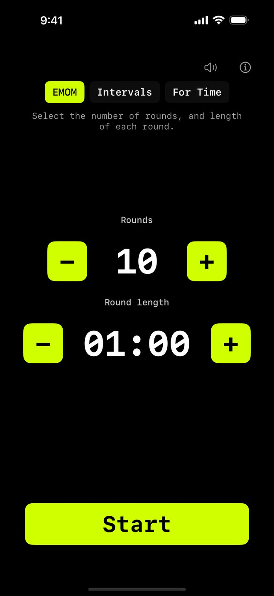

Every Minute on the Minute
EMOM Timer
for CrossFit
Velg 1–120 runder med rundelengder fra 0:30 til 9:30 (30-sekunders intervaller). Trykk Start. En 10-sekunders nedtelling gjør deg klar, og deretter kjører timeren med lyd-cues ved hvert rundeskift. Finnes for 5 Apple-plattformer. Ingen pålogging, ingen abonnement, ingen reklame.
39,00 kr engangskjøp · iOS 16 eller nyere
iPhone · iPad · Apple Watch · Mac · Apple TV
Hva er EMOM?
EMOM står for Every Minute on the Minute. Du starter et sett øvelser i begynnelsen av hvert minutt. Tiden som er igjen er pausen din. Når neste minutt starter, kjører du igjen.
Det er ryggraden i CrossFit-programmering. EMOM-økter tvinger fram et jevnt tempo og belønner effektivitet. Hvis settet tar 40 sekunder, har du 20 sekunders pause. Tar det 55 sekunder, har du bare 5.

Slik fungerer EMOM i WODrounds
-
1 til 120 runder
Sett alt fra en rask 5-runders oppvarming til en 120-runders utholdenhetsøkt. Store tall, ett trykk om gangen.
-
Custom rundelengde
Standard er 1 minutt, men du kan sette fra 30 sekunder opp til 9:30. Det gir E2MOM, E90S eller hvilket som helst custom intervall du trenger.
-
Lyd + haptikk
Lyd-cue ved hver rundestart. Haptisk feedback ved rundeskift. Halvveis- og 10-sekunders varsel, så du vet hvor du er.
-
iPhone → Watch
Start på iPhone, følg nedtellingen på Apple Watch. Samme runde, samme tid. Eller kjør standalone på klokken.
Eksempler på EMOM-økter
Nybegynner-EMOM (10 min)
EMOM · 10 runder · 1:00 hver
- 5 push-ups
- 10 air squats
- Hvil resten av minuttet
E2MOM Styrke (20 min)
EMOM · 10 runder · 2:00 hver
- 3 tunge markløft
- 5 strict pull-ups
- Hvil til neste 2-minutters merke
Conditioning EMOM (15 min)
EMOM · 15 runder · 1:00 hver
- Minutt 1: 10 kettlebell swings
- Minutt 2: 8 burpees
- Minutt 3: 12 box jumps
- Gjenta 5 ganger
Start din EMOM
Finnes for iPhone, iPad, Apple Watch, Mac og Apple TV.
39,00 kr engangskjøp · iOS 16 eller nyere
Ingen pålogging. Virker offline.
Relatert
-
Interval Timer →
Custom work- og rest-perioder med valgfritt antall runder. For HIIT, circuits og conditioning.
-
Tabata Timer →
20 sekunders work, 10 sekunders rest, 8 runder. Den klassiske Tabata-protokollen i WODrounds.
-
Timer Guide →
Lær når du skal bruke EMOM vs. intervals vs. Tabata og hvordan du setter opp hvert format.